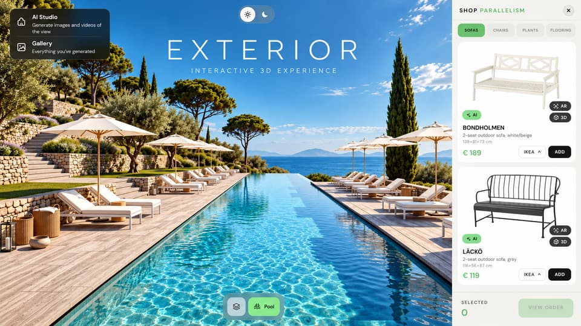
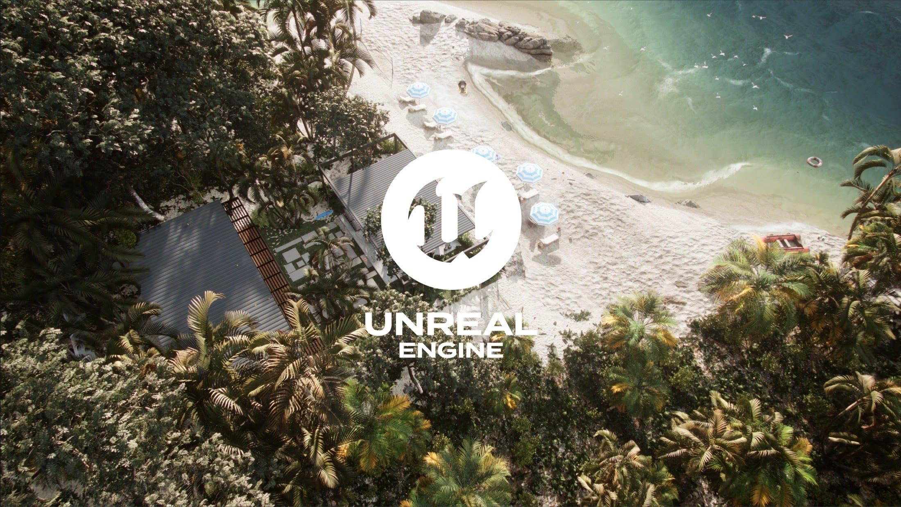

Real-time cinematics
Showreel 2026
Unreal Engine cinematics: light, material and camera, rendered in real time.
Unreal Engine · C++ · Python · VR
Configurators, tools and real-time scenes I designed and built. Each case study shows the running build first, then the renders.
Unreal Engine cinematics: light, material and camera, rendered in real time.
Interactive products in Unreal Engine, each with a project or build to download.
Hull, deck and sail finishes, camera hotspots and time of day, on desktop and in VR.
Orbit the car, open every door, sit inside and swap paint and upholstery live.
Furnish an empty room from a 33-item catalogue, then swap every finish live.
 In development
In development
A business-jet configurator, from the apron to the cabin. Look-development renders so far.
Python tools I wrote for my own pipeline, and shipped.
Reads the scene geometry, writes exact measurements into the prompt and returns a photoreal 4K render without leaving the viewport.
 Tool
Tool
Audits Unreal Engine archviz scenes, catches common errors and enforces production rules before rendering.
Interactive scenes that run in the browser, and a full Unreal Engine environment.

Web 3DExplore the scene, pick furniture with 3D and AR previews, switch day and night.
Open live ↗ Web 3D
Web 3D
Walk a tropical residence in the browser and pick its finishes in a built-in shop.
Open live ↗
Real-timeA complete Unreal Engine 5 environment, lit and set up for cinematics.